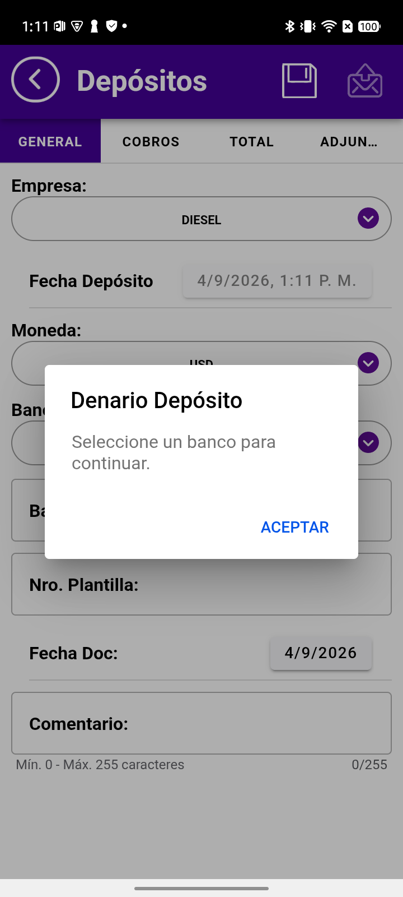
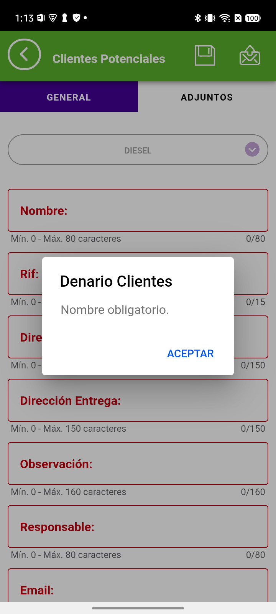
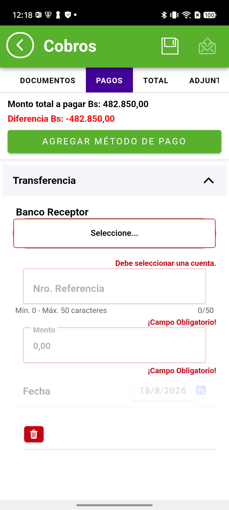
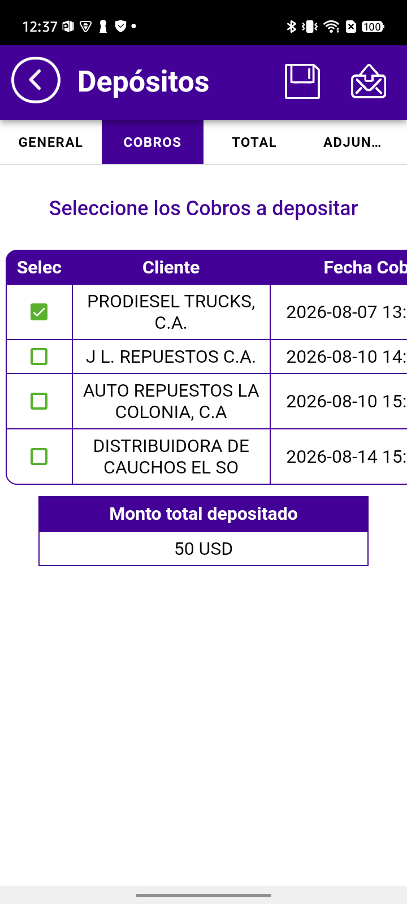

GUÍA DEL VENDEDORDenario Premium Móvil
Septiembre 2026
Septiembre 2026
Cómo la aplicación te indica ahora lo que falta · Clientes, Pedidos, Cobros, Inventarios, Devoluciones, Depósitos y Visitas
Estas mejoras aplican a los siete módulos con los que trabajas a diario. El comportamiento es el mismo en todos: cambia solo la forma de mostrarlo, según lo que cada pantalla necesita.
Al pulsar Enviar, si algo está pendiente aparece un aviso escrito en palabras, no un código ni un error genérico.
El aviso nombra exactamente lo que hay que completar, de modo que sabes qué hacer sin tener que revisar toda la transacción.
Pulsas ACEPTAR, completas lo que te indicó y vuelves a enviar.

Además del mensaje, los campos que faltan se resaltan en la pantalla: el recuadro y su título cambian de color.
Así no hace falta que recuerdes lo que decía el aviso: la propia pantalla te lo muestra, y puedes ir llenándolos uno por uno.
A medida que los completas, el resaltado desaparece.

En las pantallas con muchos datos, el aviso aparece justo debajo del campo al que corresponde.
Es la forma más precisa: te lleva al dato exacto, incluso cuando hay varios pendientes a la vez en distintas partes de la pantalla.
También verás marcada la pestaña donde está el pendiente, para que sepas hacia dónde ir sin buscar.

Esta es la mejora que más se nota en el día a día.
Antes podía quedar alguna marca en pantalla aunque ya hubieras completado todo, y quedaba la duda de si algo seguía mal.
Ahora no: en cuanto completas el último dato pendiente, las marcas se retiran.
Una pantalla sin señales significa exactamente eso: la transacción está completa y puedes enviarla con confianza.

| Lo que ves | Qué significa |
|---|---|
| Un mensaje al pulsar Enviar | Falta algo, y el mensaje te dice qué es |
| Un campo resaltado | Ese dato está pendiente. Complétalo y el resaltado se quita |
| Una pestaña señalada | El pendiente está en esa pestaña. Entra y búscalo ahí |
| Ninguna marca en la pantalla | La transacción está completa |
| Aparece «¿Desea enviar…?» o «… será enviado» | La aplicación la dio por válida. Al confirmar, se envía |